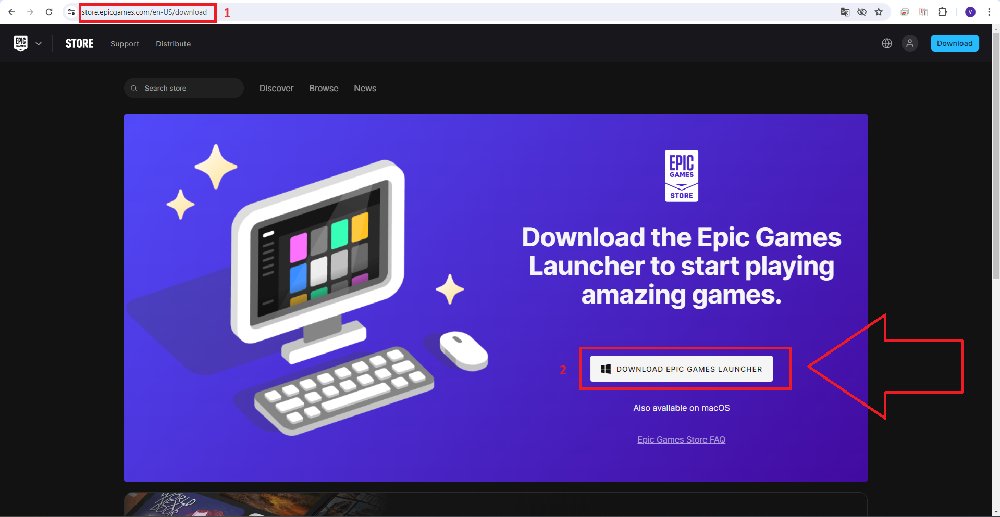
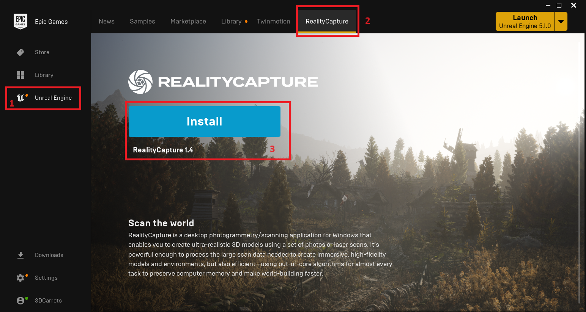
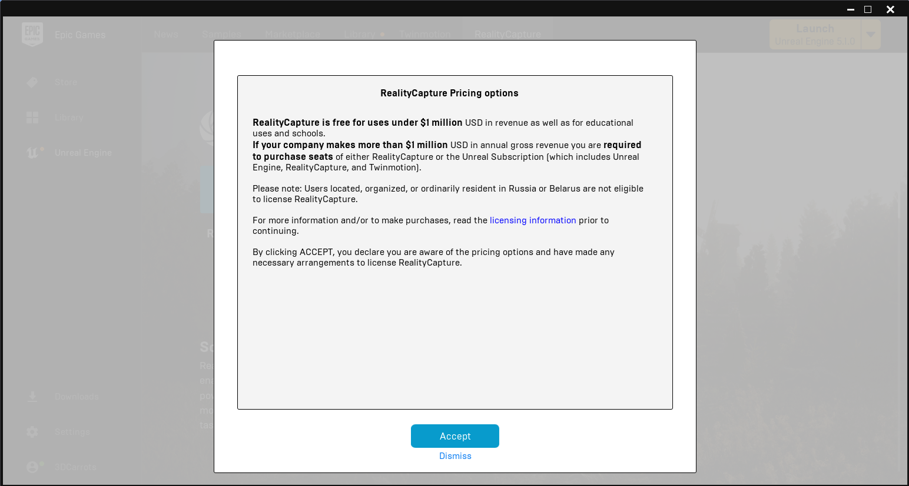
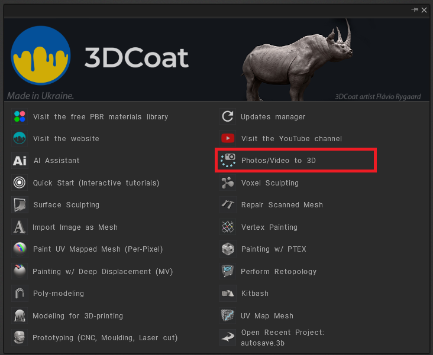

How to install Reality Capture
If you want to use Reality Capture as a photogrammetry tool in 3DCoat, you need to install it first. It can be installed from Epic Launcher.
If Epic Launcher is not installed on your computer, you can install it from the following link:
https://store.epicgames.com/en-US/download

1. Open https://store.epicgames.com/en-US/download in your browser.
2. Click the "DOWNLOAD EPIC GAMES LAUNCHER" button.

The next step is to install Reality Capture from Epic Launcher:
1. In the left menu, select the Unreal Engine tab.
2. In the top menu, select the “Reality Capture” tab.
3. Click on the big blue "Install" button to install it.

Read the agreements and click the "Accept" button to accept them.

At the end, you need to click the “Launch” button to complete the installation and run Reality Capture, only after this step the installation will be completed.

Once Reality Capture is installed, you can create a "Photos/Video to 3D" project in 3D Coat.